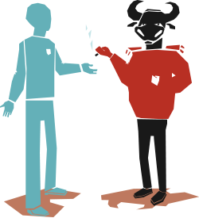
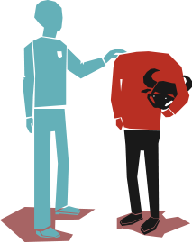
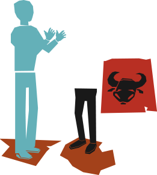
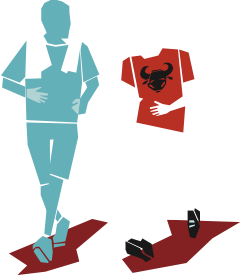
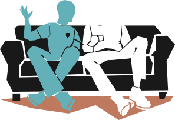
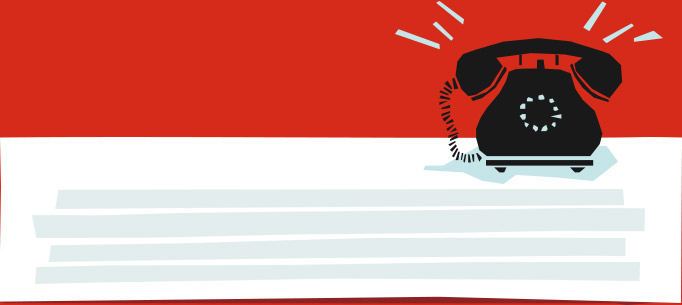

fyrsta þrep
Foríhugunarþrep
(Ætlar ekki að
breyta hegðun)
Hefur þú einhvern tíma hugsað
um að hætta tóbaksnotkun
þetta er ekkert vandamál!
frænka vinar míns reykti alltaf þrjá pakka af filterslausum
á dag og varð 97 ára!

- Hefur engar áætlanir að breyta hegðun
- Vill ekki breyta hegðun sinni og fer í vörn
- Kostir hegðunarinnar mikilvægari en gallarnir
- Forðast upplýsingar og pælir minna en aðrir í hegðun sinni
Lesa meira
Er til staðar til að ræða málin, hvetur
og fræðir eftir því sem færi gefst.
annað þrep
Íhugunarþrep
(Vill breyta hegðun en er
ekki búin að taka ákvörðun)
Hver yrði helst ávinningurinn
að hætta að nota tóbak?
ÉG HÆTTI EINHVERN DAGINN. ÞAÐ ER ALVEG KLÁRT.
ÉG GET BARA EKKI FARIÐ AÐ HÆTTA Í FRÍINU!

- Er meðvitaður um áhætturnar og er alvarlega að hugsa um að breyta hegðun
- Er að vega og meta kosti og galla en hefur ekki tekið ákvörðun um að breyta hegðun sinni
- Meðvitaðri um kosti þess að breyta hegðun en veit af göllunum
Lesa meira
Talar um ástæðurnar fyrir reykingunum
og kostina við að hætta að reykja.
þriðja þrep
Undirbúningsþrep
(Hefur tekið ákvörðun
um að hætta)
Ég þekki einn sem fékk aðstoð við
að hætta hjá Reyksímanum 8006030
Nú er ég alveg að fara að drepa í
Ný vika framundan – tóbakslaus

- Hefur tekið ákvörðun um að breyta hegðun sinni
- Metur kosti þess að breyta hegðun mikilvægari en ókostina
- Einstaklingar stoppa stutt á þessu stigi
Lesa meira
Hrósar fyrir ákvörðunina og býður aðstoð sína og
bendir á leiðir sem gagnast við að hætta að nota tóbak.
fjórða þrep
Framkvæmdarþrep
(Er hætt(ur)
að nota tóbak)
Góður! Þú lítur
strax betur út
Afsakaðu hvað ég er úrilur.
Ég er að hætta í tóbakinu

- Hefur breytt sinni hegðun 1 dag til 6 mán
- Þarf mikið að hafa fyrir hegðunarbreytingunni áhætta á bakslagi mikil
- Metur ávinning með hegðunarbreytingu sinni meiri en kostnaðinn
Lesa meira
Hrósar, styður og bendir á leiðir
til að koma í veg fyrir bakslag.
fimmta þrep
Viðhaldsþrep
(Hefur ekki notað
tóbak í einhvern tíma)
Þetta er bara allt annað líf
Manstu þegar ég stóð úti á svölum í rigningu og roki til að reykja

- Ný hegðun orðin stöðug, hefur varað í meiri en 6 mánuði
- Vinnur að því að koma í veg fyrir bakslag
- Hugsar lítið um gömlu hegðunina
Lesa meira
Hrósar, styður og bendir á hættur í umhverfinu
og hvernig hugarástand getur aukið líkur á bakslagi.
vantar þig hjálp við KOMAST Í GEGNUM
ÞREPIN OG hætta TÓBAKSNOTKUN?
fáðu ráðgjöf í síma: 800 60 30
